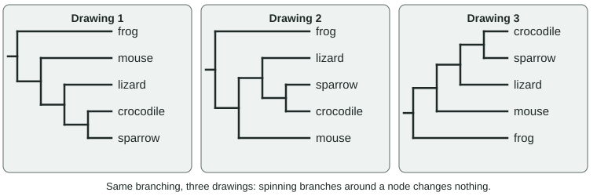
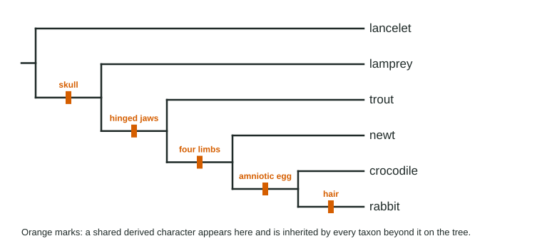

A phylogeny is the evolutionary history of a group: which lines split from which, and in what order. Biologists draw phylogenies as branching diagrams called phylogenetic trees. This page shows how to read a tree without falling into the usual traps, how to build one from a table of characters or from DNA differences, and why every tree is a hypothesis that can change.
What a tree shows

Read a tree from the root, its oldest point, toward the tips (Figure 1):
- Each tip is a taxon (plural taxa): a species or larger group, usually one living today.
- Each branch is a line of descent through time.
- Each node, or branch point, is the most recent common ancestor of everything that branches from it. At a node, one ancestral population split into two lines that then evolved separately. This build-up of differences after a split is divergent evolution.
- Sister taxa share a node that no other taxon on the tree shares; each is the other's closest relative on the tree.
The single rule for reading relationships: two taxa are more closely related the more recent the node where their lines meet. To compare, trace each taxon back toward the root until the lines join.
Read the nodes, not the tips

Branches can be spun around any node like a mobile without changing the tree (Figure 2). That leads to three rules:
- Tip order means nothing. Two tips drawn side by side may be distant relatives. Only the nodes count.
- No living tip is more evolved than another. Every living taxon descends from the root through the same length of time; a frog has been evolving exactly as long as a human.
- No living taxon is the ancestor of another. A taxon that branches off early is a relative of the others, not their ancestor. Ancestors sit at the nodes.
Trees are often written in text with nested parentheses: sister taxa share a pair of parentheses. The tree in Figure 2 is (frog, (mouse, (lizard, (crocodile, sparrow)))). In ((P, (Q, R)), S), R is more closely related to P than to S, even though R and S might be drawn side by side.
Clades
A clade is an ancestor and all of its descendants. To test a group, find the most recent common ancestor of its members, then ask whether every descendant of that node is included. If one is left out, the group is not a clade. Birds descend from the same ancestor as crocodiles, turtles, lizards and snakes, so "reptiles" form a clade only if birds are included.
| Group | Its common ancestor | Every descendant included? | Clade? |
|---|---|---|---|
| Crocodiles and birds | Their shared node | Yes | Yes |
| Turtles, lizards, snakes, crocodiles | Ancestor of all reptiles | No: birds left out | No |
| Turtles, lizards, snakes, crocodiles, birds | Ancestor of all reptiles | Yes | Yes |
Building a cladogram from characters

A cladogram is a tree built from shared derived characters: traits that arose in a group's most recent common ancestor and were passed to its descendants. Each one marks a clade. A shared ancestral character is one the group inherited from an older ancestor; it is shared by the whole group and its relatives, so it cannot sort the group. Having a backbone is a derived character for vertebrates as a whole, but an ancestral character among mammals.
To tell old states from new, include an outgroup: a taxon known from other evidence to lie outside the group studied (the ingroup). States found in the outgroup are taken as ancestral.
| Animal | Skull | Hinged jaws | Four limbs | Amniotic egg | Hair |
|---|---|---|---|---|---|
| Lancelet (outgroup) | − | − | − | − | − |
| Lamprey | + | − | − | − | − |
| Trout | + | + | − | − | − |
| Newt | + | + | + | − | − |
| Crocodile | + | + | + | + | − |
| Rabbit | + | + | + | + | + |
Worked example: from table to cladogram.
Step 1. Find the outgroup. The lancelet lacks every character; other evidence places it outside the vertebrates, so its states (all −) are ancestral. Step 2. Sort characters by how many taxa share them. Skull (5), jaws (4), limbs (3), amniotic egg (2), hair (1). Step 3. Nest the groups. The skull group contains the jaws group, which contains the limbs group, and so on. Step 4. Draw. Each character becomes a mark on the branch leading to its group (Figure 3): the lamprey branches off after the skull appears, the trout after jaws, the newt after limbs, and the crocodile and rabbit are sister taxa sharing the amniotic egg. Hair marks the rabbit alone. Step 5. Check. Every character appears exactly once: 5 changes in total.
Choosing among trees: maximum parsimony
Several trees can usually be drawn for one data set. Maximum parsimony prefers the tree that needs the fewest evolutionary changes. Suppose a classmate puts the newt and the trout together as sister taxa. Four limbs would then have to arise twice (or arise once and be lost in the trout), so that tree needs 6 changes instead of 5. The simpler explanation wins unless other evidence says otherwise.
Parsimony also reveals convergent evolution. Mammals, crocodiles and birds have four-chambered hearts; lizards, snakes and turtles do not. Since crocodiles and birds are closer to the other reptiles than to mammals, the fewest-change explanation is that four chambers evolved twice, once in mammals and once in the ancestor of crocodiles and birds.
Molecular data and the molecular clock
DNA and protein sequences supply thousands of characters, one per position, and are less fooled by similar body forms that arose separately. So molecular data often give more reliable trees than anatomy alone. The rule is the same: fewer differences, more recent common ancestor.
Differences in sequences that selection barely acts on build up at a fairly steady rate. Calibrated with a split dated by fossils, the number of differences becomes a molecular clock.
Worked example: dating a split. In a 1,000-base stretch of non-coding DNA, humans and chimpanzees differ at 12 bases, and both differ from the orangutan at 31. Fossils date the orangutan split to about 15 million years ago.
Step 1. Rate. 31 differences per 15 million years. Step 2. Scale. 12 × (15 ÷ 31) = 5.8 million years ago for the human-chimpanzee split. Step 3. State the assumption. The rate is about the same in every line compared. A gene where most changes are harmful shows fewer differences in every pair and needs its own calibration, but gives the same branching order.
Every tree is a hypothesis
A tree is the best current explanation of the evidence, and it changes when evidence changes. Whales were long classified apart from hoofed mammals. In the 1990s DNA studies placed them inside the even-toed hoofed mammals, closest to hippos. Then fossil early whales turned up with ankle bones of the shape found only in that group, and the revised tree was confirmed. Trees can also be redrawn because of better methods or more genes.
Naming and classifying: taxonomy
Taxonomy names and classifies organisms. Each species has a two-part (binomial) name, genus then species, in italics: the lion is Panthera leo and the tiger Panthera tigris, so they share a genus. Species are grouped in nested ranks: domain, kingdom, phylum, class, order, family, genus, species. Modern taxonomy tries to make every named group a clade, which is why classifications change as trees are revised.
| Cladogram | Phylogenetic tree with scaled branches | |
|---|---|---|
| Shows | Branching order only | Branching order plus amount of change or time |
| Branch lengths | Mean nothing | Proportional to change or time (with a scale bar) |
| Usually built from | Shared derived characters | DNA or protein sequences |
Practice reading nodes, testing clades and building trees from character tables in the phylogenetic tree reading simulator.